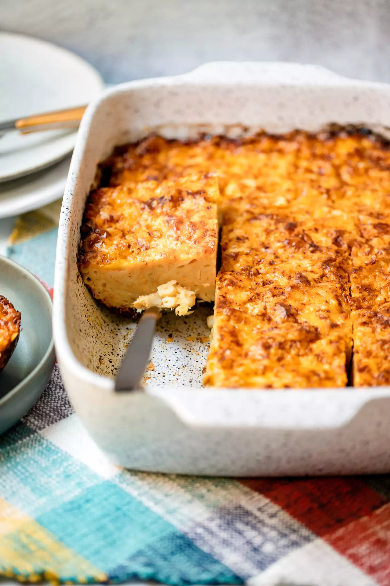

Trinidadian Macaroni Pie

Description
Caribbean macaroni pie is a beloved baked macaroni and
cheese dish that no gathering can go without, especially
during the holidays. It's crowd pleasing, tasty, and economical.
Ingredients
- 1 tablespoon plus 1 teaspoon salt, divided
- 1 pound bucatini or elbow macaroni
- 2 tablespoons unsalted butter
- 2 (12-ounce) cans evaporated milk
- 3 tablespoons ketchup
- 2 tablespoons yellow mustard
- 2 teaspoons neutral cooking oil
- 3 pimento peppers, minced
- 1/4 yellow onion, grated
- 3 large garlic cloves, grated on a microplane or
pressed in a garlic press
- 1 teaspoon black pepper
- 1 teaspoon paprika
- 1/2 teaspoon cayenne pepper, optional
- 2 eggs, beaten
- 8 ounces shredded extra sharp white cheddar cheese, divided
- 16 ounces shredded extra sharp yellow cheddar cheese, divided
Steps
- Preheat the oven to 350°F.
- Cook the pasta
- Make the milk mixture
- Cook the aromatics
- Assemble
- Bake the pie: